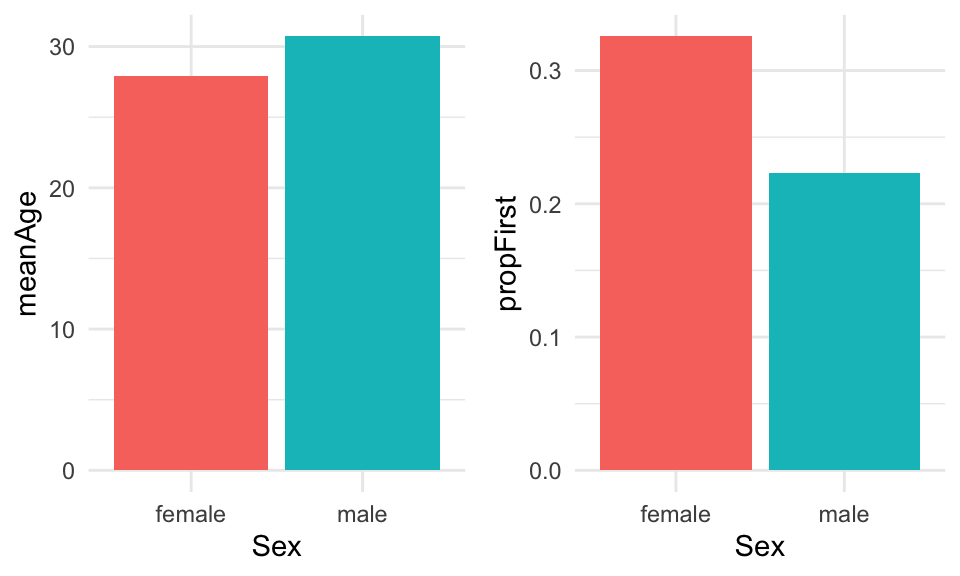
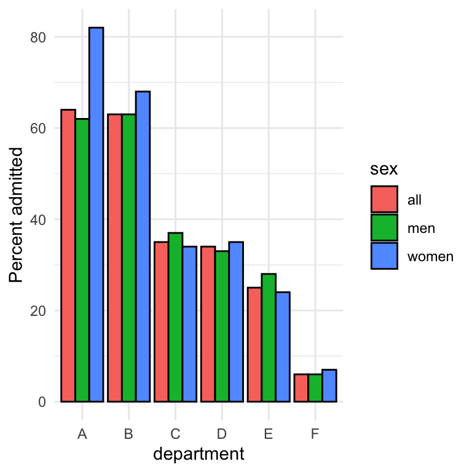
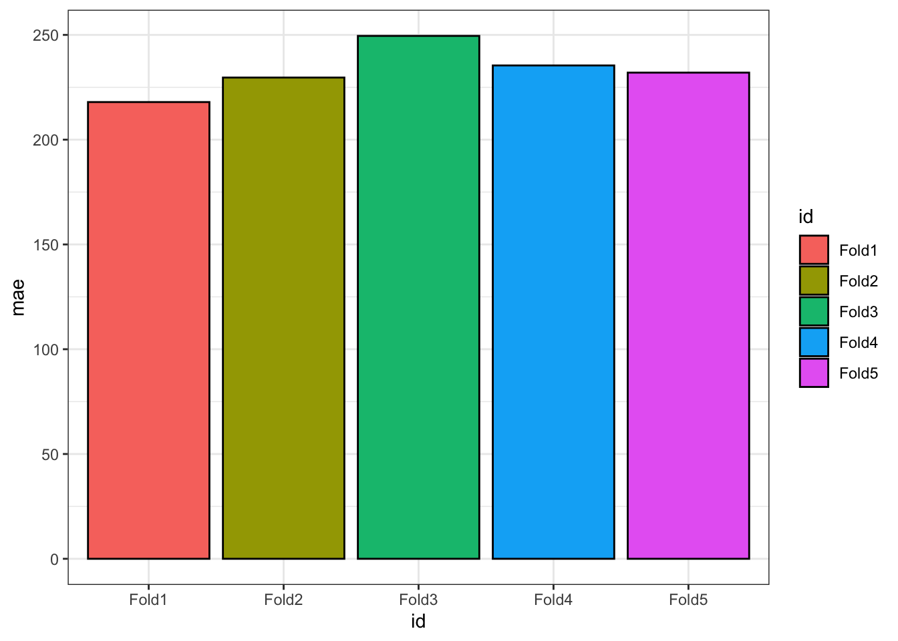
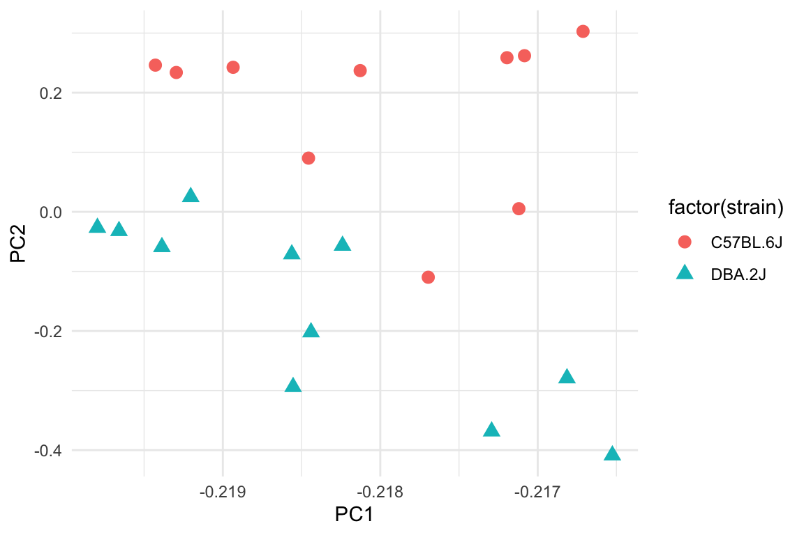
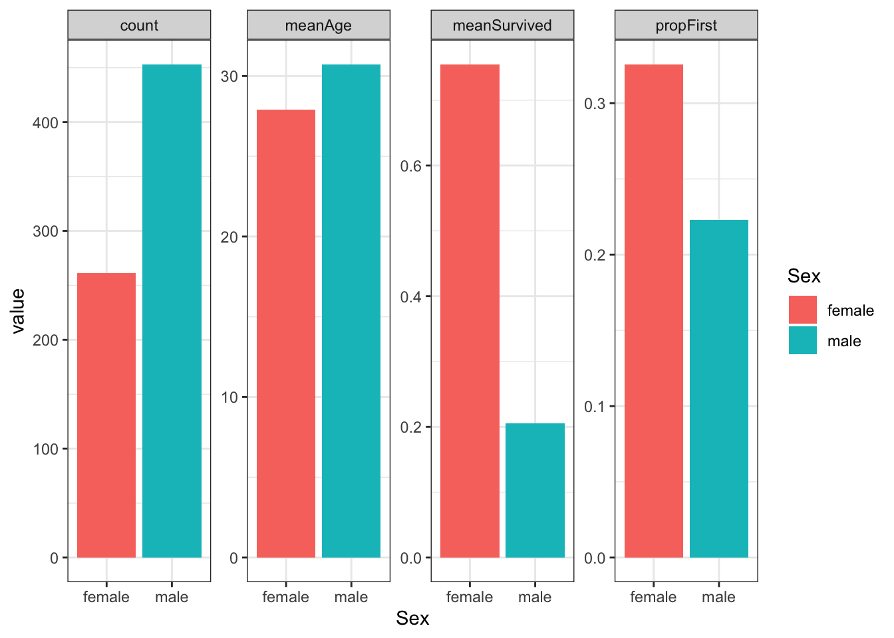

Chapter 8 Visualising trends

#load packages
library(ggplot2)
library(tidyverse)FALSE Warning: package 'tidyr' was built under R version 4.0.5FALSE Warning: package 'readr' was built under R version 4.0.5FALSE Warning: package 'dplyr' was built under R version 4.0.5library(gridExtra)
library(broom)FALSE Warning: package 'broom' was built under R version 4.0.5library(glue)FALSE Warning: package 'glue' was built under R version 4.0.58.1 Indledning og læringsmålene
8.1.1 Læringsmålene
I skal være i stand til at
- Anvende
nest()ogmap()strukturen til at gentage en korrelation analyse over flere forskellige datasæt. - Bruge
ggplotfunktiongeom_smooth()til at visualisere lineær regression eller loess trend linjer. - Kombinere
map()oglm()til at beregne regression statistike for flere lineær regression modeller og tilføje dem til plottet til at gøre det mere informativ.
8.1.2 Introduktion til chapter
I dette chapter demonstranter jeg hvordan man anvende den nest() og map() struktur som vi så sidste gange til at lave statistiske analyser med korrelation og lineær regression. Vi lærer hvordan vi kan visualisere trends og korrelations og tilføj relevante statistikker til plots til at gøre dem endnu mere informativ.
8.1.3 Video ressourcer
(OBS: kunne desværre ikke nå videoerne til i dag pga. forkølelse/travlhed men kan eventuelle lave dem senere hvis der er efterspørgsel)
- Video 0: Korrelation koefficient med
nest()ogmap() - Video 1: Lineær regression linjer med ggplot2
- Video 2: Lineær regression med
nest()ogmap() - Video 3: Tilføj labels med
lm()statistik på plottet
8.2 nest() og map(): eksempel med korrelation
Vi kigger på korrelation analyse først men gentage samme struktur med nest() og map() når vi gennemgå lineær regression.
8.2.1 Korrelation analyse i R
Man kan lave en korrelation analyse i R ved at anvende cor.test(). For eksempel, forestille os at vi gerne vil finde ud af korrelationen mellem gc content (variablen gc) og genes (variablen genes) for de data eukaryotes fra sidste lektion. Vi plotter en histogram og beslutter os for at lave korrelation mellem gc og den transformerede variable log10(genes).
eukaryotes %>%
mutate(log10_size_mb = log10(size_mb)) %>%
select(log10_size_mb,gc) %>%
pivot_longer(everything()) %>%
ggplot(aes(x=value,fill=name)) +
geom_histogram(bins=40,colour="black") +
facet_wrap(~name,scales="free") +
theme_bw()## Warning: Removed 388 rows containing non-finite values (stat_bin).
Vi mistænkter, at der kan være nogle sub-struturer indenfor de data - for eksempel over de forskellige organismer grupper i variablen Group. Vi benytter alligevel cor.test() til at teste for korrelation mellem gc og log10(size_mb) over hele datasæt:
my_cor_test <- cor.test(eukaryotes$gc,log10(eukaryotes$size_mb))
my_cor_test##
## Pearson's product-moment correlation
##
## data: eukaryotes$gc and log10(eukaryotes$size_mb)
## t = -15.678, df = 11118, p-value < 2.2e-16
## alternative hypothesis: true correlation is not equal to 0
## 95 percent confidence interval:
## -0.1652066 -0.1288369
## sample estimates:
## cor
## -0.1470715Her vil jeg også gerne introducerer en funktion der hedder glance() som findes i R-pakken broom. Funktionen glance() anvendes til at tage den output fra en statistiske test (fk. cor.test()) og lave det om til et tidy dataramme. Det gøre det nemmere for eksempel til at lave et plot, eller samler op statistikker fra forskellige tests.
library(broom)
glance(my_cor_test)FALSE # A tibble: 1 × 8
FALSE estimate statistic p.value parameter conf.low conf.high method alternative
FALSE <dbl> <dbl> <dbl> <int> <dbl> <dbl> <chr> <chr>
FALSE 1 -0.147 -15.7 8.25e-55 11118 -0.165 -0.129 Pearson'… two.sidedVi kan se at over hele datasæt, er der en signifikant negativ korrelation (estimate -0.147 og p-værdi 8.25054^{-55}) mellem de to variabler, men vi er dog stadig mistænksom overfor eventuelle forskelligheder blandt de fem grupper fra variablen group.
Vi vil gerne gentage vores nalyse for hver af de fem grupper fra group. En god tilgang til at undersøge det er at bruge den ramme med group_by() og nest() som vi lært sidste gange.
8.2.2 Korrelation over flere datasæt på en gang
Lad os først tjekke fordelingen af de to variabler opdelt efter variablen group. Bemærk at når de to variabler er i forskellige kolonner er vi nødt til at først få vores data i long form med pivot_longer().
eukaryotes %>%
mutate(log10_size_mb = log10(size_mb)) %>%
select(log10_size_mb,gc,group) %>%
pivot_longer(-group) %>%
ggplot(aes(x=value,fill=group)) +
geom_histogram(bins=40,alpha=0.5,colour="black") +
scale_fill_brewer(palette = "Set1") +
facet_wrap(~name,scales="free") +
theme_bw()## Warning: Removed 388 rows containing non-finite values (stat_bin).
Vi kan se, at der er forskelligheder blandt de fem grupper og der kan forekommer forskellige sammenhænge mellem de to variabler. Vi benytter i følgende den group_by() + nest() ramme som blev introducerede sidste lektion.
Definere korrelation funktion
Lad os definere den korrelation test mellem gc og size_mb i en funktion:
cor_test <- ~cor.test(.x$gc,log10(.x$size_mb))Husk:
- Brug
~lige i starten for at fortælle R, at vi arbejde med en funktion. - Specificer det indiv datasæt indenfor
cor.test()med.x(husk atmap()her fungere over en list af datasæt, så indenfor et datasæt specificerer vi kolonnergcogsize_mbved.x$gcog.x$size_mb).
Vi vil gerne få statistikker fra cor.test() i en pænt form så vi tilføjer glance() i funktionen:
cor_test <- ~cor.test(.x$gc,log10(.x$size_mb)) %>% glance()Benytte group_by() + nest()
For at lave et cor.test() til hver af de fem grupper i variablen group(), skal vi først anvende nest():
eukaryotes_nest <- eukaryotes %>%
group_by(group) %>%
nest()
eukaryotes_nest## # A tibble: 5 × 2
## # Groups: group [5]
## group data
## <chr> <list>
## 1 Other <tibble [51 × 18]>
## 2 Protists <tibble [888 × 18]>
## 3 Plants <tibble [1,304 × 18]>
## 4 Fungi <tibble [6,064 × 18]>
## 5 Animals <tibble [3,201 × 18]>Vi har fået vores fem sub-datasæt i en list der hedder data.
Bruge map() på de nested datasæt
Nu lad os køre vores funktion på den nested data. Vi bruger map() til at lave samme funktion for hver af de fem datasæt. Vi bruger map indenfor mutate til at lave en ny kolon der hedder test_stats, hvor resultaterne for hver af de fem tests kan lagres.
eukaryotes_cor <- eukaryotes_nest %>%
mutate(
test_stats=map(data,cor_test),
)
eukaryotes_cor## # A tibble: 5 × 3
## # Groups: group [5]
## group data test_stats
## <chr> <list> <list>
## 1 Other <tibble [51 × 18]> <tibble [1 × 8]>
## 2 Protists <tibble [888 × 18]> <tibble [1 × 8]>
## 3 Plants <tibble [1,304 × 18]> <tibble [1 × 8]>
## 4 Fungi <tibble [6,064 × 18]> <tibble [1 × 8]>
## 5 Animals <tibble [3,201 × 18]> <tibble [1 × 8]>For at kunne se de statistics skal man bruge funktionen unnest() på variablen test_stats:
eukaryotes_cor <- eukaryotes_cor %>%
unnest(test_stats)
eukaryotes_cor## # A tibble: 5 × 10
## # Groups: group [5]
## group data estimate statistic p.value parameter conf.low conf.high
## <chr> <list> <dbl> <dbl> <dbl> <int> <dbl> <dbl>
## 1 Other <tibble> 0.489 3.80 4.22e- 4 46 0.238 0.679
## 2 Protists <tibble> 0.301 9.26 1.54e- 19 860 0.239 0.361
## 3 Plants <tibble> -0.203 -7.37 3.10e- 13 1267 -0.255 -0.149
## 4 Fungi <tibble> 0.377 31.2 3.87e-198 5884 0.355 0.399
## 5 Animals <tibble> 0.0437 2.42 1.57e- 2 3053 0.00825 0.0790
## # … with 2 more variables: method <chr>, alternative <chr>Vi kan bruge den direkte i et plot. Lad os fokusere på den korrelaton koefficient i kolonnen estimate og omsætte den til et plot:
cor_plot <- eukaryotes_cor %>%
ggplot(aes(x=group,y=estimate,fill=group)) +
geom_bar(stat="identity",colour="black") +
scale_fill_brewer(palette = "Set3") +
ylab("Corrlation estimate") +
theme_classic()
cor_plot
Vi kan gå videre med vores plot og tilføje nogle labels efter p-værdien for at gøre det mere informativ - lad os først gå videre til at lave en lignende analyse med lineær regression.
8.3 Visualisering af lineær regression med ggplot2
8.3.1 Lineær trends
Man kan benytter lineær regression til at visualisere trends i de data. For eksempel kan man se i følgende scatter plot mellem body_mass_g og bill_length_mm i datasættet penguins at der er plottet en bedste rette linje igennem punkterne, som viser, at der er en postiv sammenhæng mellem de to variabler.
## `geom_smooth()` using formula 'y ~ x'
Den bedste rette linje har en formel \(y = a + bx\), hvor \(a\) er den “intercept” og \(b\) er den “slope” (hælde) af linjen. Idéen med simpel lineær regression er, at man gerne vil finde den bedste mulige værdier for \(a\) og \(b\) for at plotte ovenstående linje således, at afstanden mellem linjen og punkterne bliver minimeret. Uden at gå i detaljer om hvordan det beregnes, kan man bruger lm indenfor R til at finde den bedste rette linje. For eksempel:
lm(bill_length_mm~body_mass_g,data=penguins)##
## Call:
## lm(formula = bill_length_mm ~ body_mass_g, data = penguins)
##
## Coefficients:
## (Intercept) body_mass_g
## 27.150722 0.004003Her kan man se, at den intercept er 27.15 og den slope er 0.004 - det betyder, at hvis body_mass_g stiger ved 1, så ville den forventet bill_length_mm stiger ved 0.004. Man kan således bruge linjen til at lave forudsigelser. For eksempel, hvis jeg vejede en ny pingvin og fandt ud af, at den vejede 5000 gramms, kunne jeg bruge min linje som den bedste gætte på dens bill længde:
y <- 27.150722 + 0.004003 * 5000
y## [1] 47.16572Så kan man se, jeg forventer en pingvin af 5000 g til at have en bill length af omkring 47.2 mm. Den kan også visualiseres i et plot:
## `geom_smooth()` using formula 'y ~ x'
8.3.2 plotting lineær trend lines with geom_smooth()
Indbygget i ggplot2 er en funktion der hedder geom_smooth() som kan bruges til at tilføje den bedste rette linje til plottet. Man benytte den simpelthen ved at specificere + geom_smooth(method="lm") indenfor plot kommando:
ggplot(penguins,aes(x=body_mass_g,y=bill_length_mm)) +
geom_point() +
theme_minimal() +
geom_smooth(method="lm",se=FALSE)## `geom_smooth()` using formula 'y ~ x'
Det er nemt at bruge (bare tilføj en kode linje) og at man kan få en konfidensinterval med, hvis man gerne vil have den: i ovenstående plot specificeret jeg se=FALSE men hvis jeg angiv se=TRUE (default), får jeg følgende plot:
ggplot(penguins,aes(x=body_mass_g,y=bill_length_mm)) +
geom_point() +
theme_minimal() +
geom_smooth(method="lm",se=TRUE)## `geom_smooth()` using formula 'y ~ x'
8.3.3 plotting multiple lineær trend lines with geom_smooth()
For at tilføje en bedste rette linje til hver af de tre species i stedet for samtlige data, er det meget nemt i ggplot: man angiver bare colour=species:
ggplot(penguins,aes(x=body_mass_g,y=bill_length_mm,colour=species)) +
geom_point() +
theme_minimal() +
geom_smooth(method="lm",se=FALSE)## `geom_smooth()` using formula 'y ~ x'
Så kan vi se, at der faktisk er tre forskellige trends her, så det giver god mening at bruge de tre forskellige linjer i stedet for kun en.
8.3.4 Plot trends med method=="loess" i ggplot.
I ggplot er vi ikke begrænset til method="lm" indenfor geom_smooth(). Lad os afpøve i stedet method="loess":
library(palmerpenguins)
penguins <- na.omit(penguins)
ggplot(penguins,aes(x=body_mass_g,y=bill_length_mm,colour=species)) +
geom_point() +
theme_minimal() +
geom_smooth(method="loess",se=FALSE)## `geom_smooth()` using formula 'y ~ x'
Så kan man fange trends som ikke nødvendigvis er lineær. Men det er mere ligefrem at beskrive en lineær trend og bruge den til at beregne de nødvendige statistik til at støtte vores observationer.
8.4 Plot linear regresion estimates
For at finde vores estimates og tjekke signifikansen af de lineær trend, skal man arbejde direkte med den lineær model funktion lm som i ovenstående:
my.lm <- lm(bill_length_mm~body_mass_g,data=penguins)
my.lm##
## Call:
## lm(formula = bill_length_mm ~ body_mass_g, data = penguins)
##
## Coefficients:
## (Intercept) body_mass_g
## 27.150722 0.004003For at finde ud af den signifikans kan man kigge på summary
summary(my.lm)##
## Call:
## lm(formula = bill_length_mm ~ body_mass_g, data = penguins)
##
## Residuals:
## Min 1Q Median 3Q Max
## -10.1652 -3.0664 -0.7672 2.2356 16.0371
##
## Coefficients:
## Estimate Std. Error t value Pr(>|t|)
## (Intercept) 2.715e+01 1.292e+00 21.02 <2e-16 ***
## body_mass_g 4.003e-03 3.016e-04 13.28 <2e-16 ***
## ---
## Signif. codes: 0 '***' 0.001 '**' 0.01 '*' 0.05 '.' 0.1 ' ' 1
##
## Residual standard error: 4.424 on 331 degrees of freedom
## Multiple R-squared: 0.3475, Adjusted R-squared: 0.3455
## F-statistic: 176.2 on 1 and 331 DF, p-value: < 2.2e-16De tal, som er vigtige her:
- Den p-værdi:
<2e-16- den trend er statistiske signifikant. - Den R-squared værdi - det viser den proportion af variancen i
bill_length_mmsombody_mass_gforklarer. Det er svarende til den korrelation koefficient squared og kan fortolkes således -- hvis R-squared er tæt på 1, så er der tæt på en perfekt korrespondens mellem
bill_length_mmogbody_mass_g. - hvis R-squared er tæt på 0, så er der nærmeste ingen korrespondens.
- hvis R-squared er tæt på 1, så er der tæt på en perfekt korrespondens mellem
8.4.1 Iteratively estimating multiple trends
Vi kan benytte de koncepter som vi lært i sidste lektion, og som er samme som ovenpå i vores korrelation analyse.
Vi vil gerne lave en model med lm som ovenpå, og vi tilføje glance() til at få de model statistikker i en pæn form.
lm_model_func <- ~lm(bill_length_mm~body_mass_g,data=.x) %>% glance()Vi bruge group_by til at opdele efter de tre species og så nest de tre datarammer:
penguins %>%
group_by(species) %>%
nest()## # A tibble: 3 × 2
## # Groups: species [3]
## species data
## <fct> <list>
## 1 Adelie <tibble [146 × 7]>
## 2 Gentoo <tibble [119 × 7]>
## 3 Chinstrap <tibble [68 × 7]>Vi lave en lineær model på hver af de tre datasæt med map og ved at specifice funktion som vi defineret ovenpå. Vi bruger mutate ligesom før til at tilføje resulterende statistikker som en ny kolon der hedder lm_stats:
penguins_lm <- penguins %>%
group_by(species) %>%
nest() %>%
mutate(
lm_stats=map(data,lm_model_func),
)
penguins_lm## # A tibble: 3 × 3
## # Groups: species [3]
## species data lm_stats
## <fct> <list> <list>
## 1 Adelie <tibble [146 × 7]> <tibble [1 × 12]>
## 2 Gentoo <tibble [119 × 7]> <tibble [1 × 12]>
## 3 Chinstrap <tibble [68 × 7]> <tibble [1 × 12]>Til sidste bruger vi funkction unnest på vores statistikker:
penguins_lm <- penguins_lm %>%
unnest(cols=lm_stats)
penguins_lm## # A tibble: 3 × 14
## # Groups: species [3]
## species data r.squared adj.r.squared sigma statistic p.value df logLik
## <fct> <list> <dbl> <dbl> <dbl> <dbl> <dbl> <dbl> <dbl>
## 1 Adelie <tibble> 0.296 0.291 2.24 60.6 1.24e-12 1 -324.
## 2 Gentoo <tibble> 0.445 0.440 2.32 93.6 1.26e-16 1 -268.
## 3 Chinst… <tibble> 0.264 0.253 2.89 23.7 7.48e- 6 1 -168.
## # … with 5 more variables: AIC <dbl>, BIC <dbl>, deviance <dbl>,
## # df.residual <int>, nobs <int>Så kan vi se, at vi har fået en dataramme med vores lineær model statistics. Lad os omsætte dem til et plot for at sammenligne dem over de tre species af pingvin.
penguins_lm %>%
select(species,r.squared,p.value) %>%
mutate("-log10pval" = -log10(p.value)) %>%
select(-p.value) %>%
pivot_longer(-species) %>%
ggplot(aes(x=species,y=value,fill=species)) +
geom_bar(stat="identity") +
scale_fill_brewer(palette = "Set2") +
facet_wrap(~name,scale="free",ncol=4) +
theme_bw()
8.4.2 Lave og tilføje labels til dit regression plot
Som nævnt tidligere, kan det være nyttig at tilføje nogle labels til vores plots med de statistikker, vi lige har beregnet. I tilfældet af vores lineær regression trend lines, vi vil gerne tilføje de r-squared værdier og de p-værdier.
Til at gøre det kan man bruge følgende kode. Vi tage vores datasæt penguins_lm med vores beregnet statistikker og bruge den til at lave en datasæt som kan bruges i geom_text() i vores trend plot. Funktionen glue() (fra pakken glue()) er bare en nyttig måde at tilføj de r.squared og p.value værdier sammen i en string som beskriver vores forskellige trends
library(glue) # for putting the values together in a label
label_data <- penguins_lm %>%
mutate(
rsqr = signif(r.squared, 2), # round to 2 significant digits
pval = signif(p.value, 2),
label = glue("r^2 = {rsqr}, p-value = {pval}")
) %>%
select(species, label)
label_dataFALSE # A tibble: 3 × 2
FALSE # Groups: species [3]
FALSE species label
FALSE <fct> <glue>
FALSE 1 Adelie r^2 = 0.3, p-value = 1.2e-12
FALSE 2 Gentoo r^2 = 0.44, p-value = 1.3e-16
FALSE 3 Chinstrap r^2 = 0.26, p-value = 7.5e-06Vi kan tilføje vores label data indenfor geom_text(). x og y specificere hvor i plottet teksten skal være, og husk at specificere data=label_data og label=label skal stå indenfor aes() når det handler om en variable i label_data.
ggplot(penguins, aes(body_mass_g, flipper_length_mm, colour=species)) +
geom_point() +
geom_smooth(method = "lm", se = FALSE) +
geom_text(
x = 5500,
y = c(175,180,185),
data = label_data, aes(label = label), #specify label data from above
size = 4
) +
scale_color_brewer(palette = "Set2") +
theme_minimal() ## `geom_smooth()` using formula 'y ~ x'
8.4.3 case_when(): adding bar plot text
Det vil også være rart at tilføje vores p-værdier i vores barplot fra ovenstående korrelation analyse. Den kan laves igen med geom_text. Husk at vi bruge lokale aethetics funktion aes() indenfor geom_text(). Her specificerer vi at parameteren label skal være vores p-værdier fra vores datasæt. Parameteren vjust bruges til at få de tal lidt ovenpå søjlerne.
cor_plot +
geom_text(aes(label = round(p.value,3)), vjust = -0.5)
Lad os transformere de p-værdi kolon til en der viser signifikans i formen af stjerne (det ses meget ofte indenfor præsentationer og publikationer). Her kan man bruge case_when - det ligner ifelse men kan benyttes i tilfældet hvor der er flere en to muligheder. Man angiver de forskellige muligheder og separerer hvad sker hvis TRUE med tilde (for eksempel hvis p-værdien er mindre end 0.001 så få kolonnen sig tre stjerne). Her er p.value < 0.001 skrev i linjen før p.value < 0.01 så dette tilfælde få prioritet (hvis p-værdien er mindre end 0.001 få sig så tre stjerner i stedet for to).
eukaryotes_cor_sig <- eukaryotes_cor %>%
select(-data) %>%
mutate(sig = case_when(p.value < 0.001 ~ "***",
p.value < 0.01 ~ "**",
p.value < 0.05 ~ "*",
p.value < 0.1 ~ ".",
p.value >= 0.1 ~ "n.s"))
eukaryotes_cor_sig %>% select(group,sig) #viser hvordan det ser ud## # A tibble: 5 × 2
## # Groups: group [5]
## group sig
## <chr> <chr>
## 1 Other ***
## 2 Protists ***
## 3 Plants ***
## 4 Fungi ***
## 5 Animals *Nu at vi har fået en ny kolon der hedder sig kan det anvendes indenfor geom_text som i forudgående plot.
cor_plot <- eukaryotes_cor_sig %>%
ggplot(aes(x=group,y=estimate,fill=group)) +
geom_bar(stat="identity",colour="black") +
scale_fill_brewer(palette = "Set3") +
ylab("Corrlation estimate") +
theme_classic() +
geom_text(aes(label = sig),size=5, vjust = -0.1)
cor_plot
Mere om adding labels to barplots: https://r-graphics.org/recipe-bar-graph-labels
8.5 Problemstillinger
0) Quizzen på Absalon.
Husk at have indlæste følgende:
library(tidyverse)
library(broom)
data(mtcars)
data(iris)1) Korrelation øvelse
Brug
data(mtcars)ogcor.test()til at lave et test af korrelationen mellem variablerneqsecogdrat.Tip: hvis du foretrækker at undgå
$i analysen til at speciefice en kolon indenforcor.test()kan du brugemtcars %>% pull(qsec)i stedet formtcars$qsec.Tilføj funktionen
glance()til din resultat fracor.test()til at se de statistikker i tidy form. Kan du genkende de statistikker fracor.test()i den resulterende dataramme?
2) Korrelation øvelse
Vælg Species setosa fra iris (data(iris)) og brug cor.test() til at beregne korrelationen mellem Sepal.Width og Sepal.Length.
- Angiv resultaterne i tidy form.
3) Nesting øvelse
For datasættet mtcars anvende group_by() og nest() til at få en nested datasæt opdelt efter variablen cyl.
Hvor mange datasæt har du fået indenfor kolonnen
data?Tilføj en ny kolon med
mutateder heddern_rowssom beregner antallet af række i hver af de tre datasæt - brug følgende struktur (først angiv kolonnen som indeholder vores list af datasæt, og så angive funktionen som beregner antallet af række).
mtcars %>%
group_by(cyl) %>%
nest() %>%
mutate("n_rows" = map(???,???)) #erstatte ??? her- Hvad få du indenfor din ny kolonnen? Prøve at andre
maptilmap_dblog se hvad der sker. - Beholde
mapog tilføj%>% unnest(n_rows)i stedet for og se hvad der sker.
4) Multiple korrelation
Vi vil gerne beregne den korrelation mellem variablerne qsec og drat til hver af de tre datasæt.
- Tilpasse følgende funktion så at vi teste korrelation mellem de to variabler.
- Tilføje
glance()så at vi få vores data i tidy form.
cor_test <- ~cor.test(.x$qsec,???) #erstatte ??? og tilføj glance funktion- Brug map i nedenstående med din funktion til at beregne de korrelation til hver af de tre datasæt.
- Huske at
unnestkolonnen med dine korrelation statistikker bagefter.
mtcars %>%
group_by(cyl) %>%
nest() %>%
mutate(cor_stats = ???) #erstatte ??? her og husk unnest- Lave et barplot af
estimatemed den resulterende dataramme
5) Multiple korrelation øvelse
Lave samme analyse som 4) men
- nest de data efter
gear - beregne korrelationen mellem
wtogdrat
6) Linear regression øvelse
Brug data(iris) og anvende lm() til at finde den forventet Petal.Length med hensyn til Petal.Width.
- Hvad er den intercept og slope af den beregnet linje?
- Tilføj funktionen
glance()og angive værdierr.squaredogp.value.
lm(??? ~ ???,data=???) #erstatte ???7) Lave et scatter plot af Petal.Width på x-aksen og Petal.Length på y-aksen.
- Tilføje linjen
geom_smooth(method="smooth") - Ændre linjen til
geom_smooth(method="lm") - Ændre linjen til
geom_smooth(method="lm",se=FALSE) - Nu specificer en forskellige farve efter Species. Er der forskellige trends?
Vi vil gerne lave samme analyse for hver af de tre Species.
8) Lineær regression øvelse over multiple datasæt
Vi vil gerne udføre lineær regression med Petal.Length og Petal.Width som i 6), men opdelt efter de tre Species.
* Lave en funktion ved at tilpasse følgende kode. Passe på hvad data skal være lig med her (når vi skriver en funktion).
* Tilføj glance().
lm_model_func <- ???lm(??? ~ ???,data=???) #erstat ??? - Anvende
group_by()ognest() - Anvende
map()med din funktion indenformutate()til at tilføje en ny kolon som hedderlm_statstil din dataramme. - Husk at
unnestkolonnenlm_statstil at kunne se statistikker.
9) Tilføj statistik til plottet
Vi vil gerne tilføj de statistikker vi lige har beregnet i 8) til plottet vi lavet i 7).
Kopiere koden fra sektionen “Lave og tilføje labels til dit regression plot” og tilpasse den til din analyse med iris.
10) Tilføj statistik til plottet
Vi vil gerne tilføj de statistikker vi lige har beregnet i 4) til et bar plot af vores korrelation estimates.
Kopiere koden fra sektionen “case_when(): adding bar plot text” og tilpasse den til din analyse med mtcars.